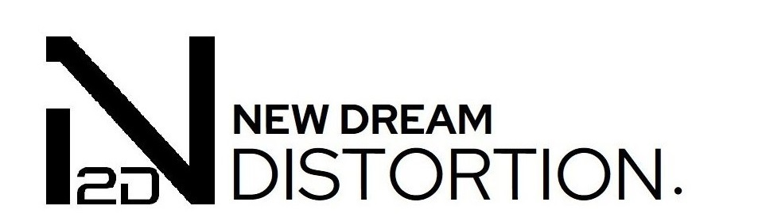

DISCOGRAPHY ABOUT MEMBER SUBMISSIONNew Dream Distortion Vol.4
圍繞「新,夢,失真」為核心主題，歡迎藝術家傳播失真的聲浪！
不過這次的風格也許比以前更加暴力..?
- 風格要求：Hard Dance (酌情收錄Ambient)
- 截止日期：2026.07.20
- 可參考此前專輯: New Dream Distortion Vol.1
New Dream Distortion Vol.2
New Dream Distortion Vol.3
Drifting Collapse 1
我們嘗試與先前不一樣的風格？
但依舊與我們的主題相關。
- 風格要求：Edm (Trance/House/Dnb/Techno...)
- 截止日期：2026.07.17
公募信息 Information